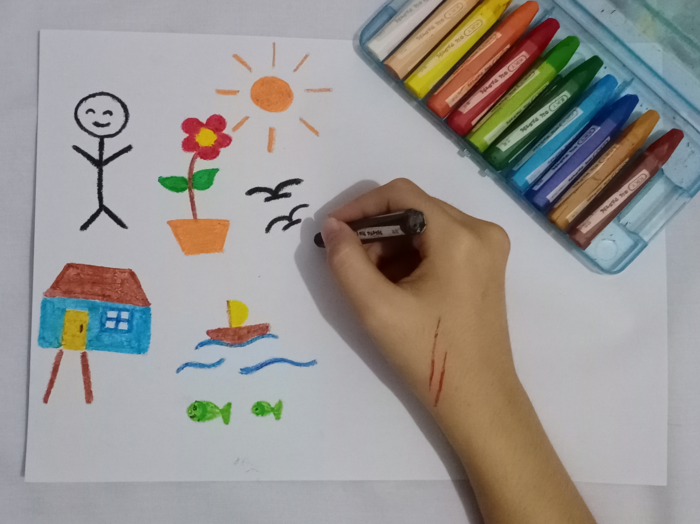

Nurikhsan Alfiqodri
"Aktivitas yang terlihat ramai masyarakat pulang ke rumah selepas bekerja di paruh waktu."
.JPG)
Kaylatifa Zahabiy
"Perkembangan pada perangkat digital sangat cepat termasuk kualitas foto yang pada awalnya rendah menjadi sangat tinggi."
.JPG)
Muhammad Cesha Rizki Ashar
"Masa kecil adalah masa terindah dimana kita mengeja nama dan huruf bukan mengeja bahasa teruntuk seseorang."
Syafira Rahma Aulia
"Rubik yang mengacak dan terjatuh, menggambarkan rumitnya proses dari permainan tersebut."
.jpg)
Galuh Ayu Adelyda Bahri
"Yang kuat jangan meninggalkan yang lemah tolong-menolonglah kepada sesama manusia."

Jahrotul Aini
"Tim kerja yang solid membuktikan bahwa bersatu kita kuat."
.jpg)
Zahra Yasmin Shafirta
"Perkembangan pada banyak fitur gadget membuat banyak masyarakat beralih pada layar sentuh yang lebih terlihat efisien."
Rimba Kayan Sastra Anjaya
"Makin kita mencemari bumi makin sedikit kita layak untuk hidup di bumi."
.jpg)
Amartya Silvi Andini
"Manusia seharusnya tidak bekerja untuk mesin tapi mesin harus bekerja pada manusia."
.jpg)
Muhammad Rizal
"Tradisi ini mangajarkan kita keberanian meskipun berulang kali terjatuh tidak takut mencoba lagi."
.JPG)
Wina Windari Kusdarniza
"Kekerasan seksual merajarela membuat banyak dari kita lupa tentang pentingnya rasa kemanusiaan dan kewarasan dalam berperilaku."

Pingkan Yuki Fitriyanti
"Tanpa komitmen pada cinta tak akan bertahan dalam menjalin sebuah hubungan."
.JPG)